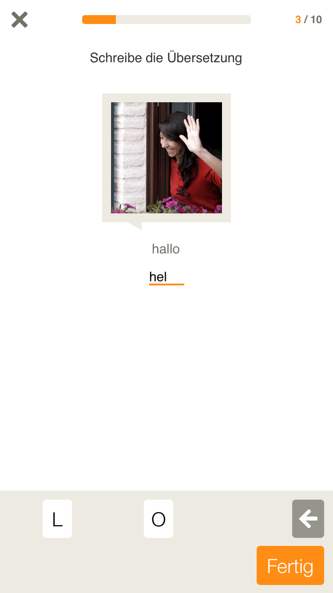
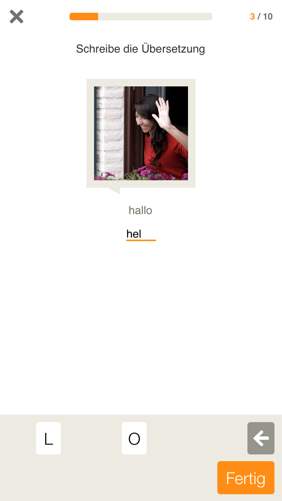
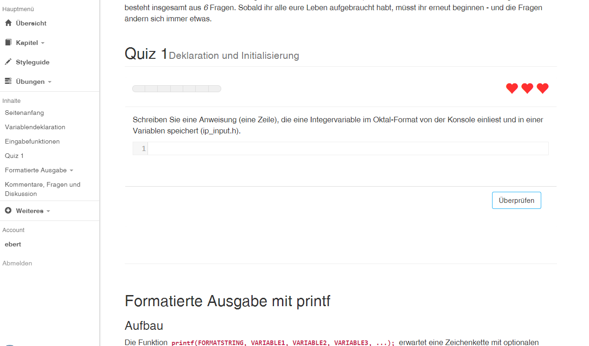
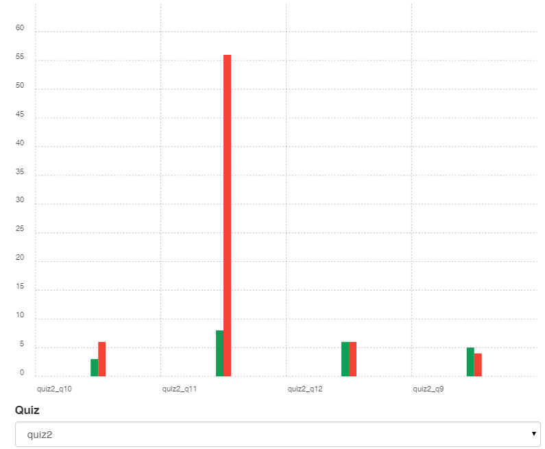
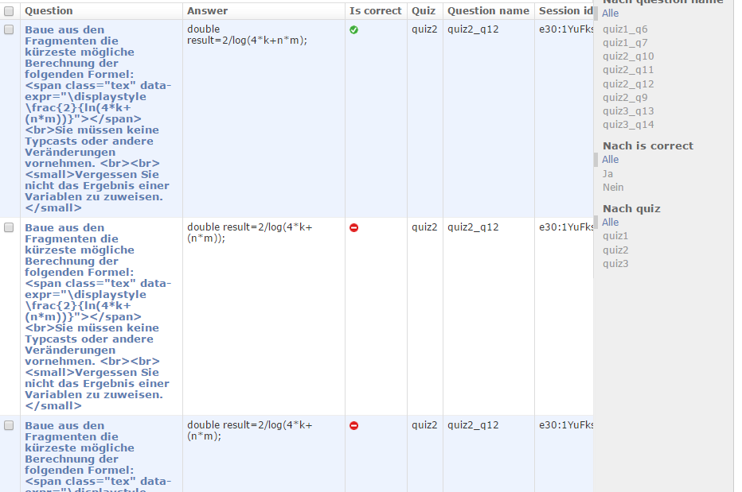

Leveraging Parson’s Problems and Code-Fragment-Questions in a Quiz for an Interactive Programming eBook
duoquiz - a JavaScript Library
Michael Ebert Coburg University of Applied Sciences
Introduction
Context
- Improving our introductory programming course
- Developing an interactive eBook (also known as ICSeBooks)
- Focus on language proficiency
Introduction
Why
- Syntax errors and complicated tool-chains distract students
- Explicitly practice the language like in natural language learning
- Upcoming of new natural language learning tools/apps
Duolingo and Babbel+
 

From ICSeBooks and Duolingo
The Connection
Fostering Language Proficiency
- Writing
- Reading
SpeakingListening
From ICSeBooks and Duolingo
The Connection
“Automatically assessed self-quiz exercise, interspersing frequent practice with meaningful feedback so that learners can gauge their own knowledge”
- Which question types may serve our requirements for syntax assessment?
- How are they evaluated?
- How can we provide meaningful feedback?
- How can data collection be best assembled?
- How should the quiz be developed and deployed in class?
Related Work
- MOOCs use quizzes for assessment
- js-parsons
- tryruby.org
- Turings-Craft
- moodle
- socrative, quizlet, ...
Analysis and Requirements
Course Overview & Problems
- Electrical Engineering, Automation and Robotics, Renewable Energies
- Fundamental programming concepts
- Preparation for consecutive courses (C language)
duoquiz
Parson's Problems for C-Syntax
Preparing the quiz...
Code Fragment Questions
Preparing the quiz...
Question Format
var q8_question = 'Write two statements, that read in a decimal value from the console and print it in octal format.';
var q8_solutions = [
["int", ".", "=", "GetInt", "(", "\'d\'", ")", ";", "printf", "(", "\"%o\"", ",", new duoquiz.Reference(2, "eingabe"), ")", ";"]
];
var q8_passtext = 'You got it.';
var q8 = new duoquiz.SimpledefinitionQuestion(q8_question, q8_solutions, q8_passtext, null);
q8.setRequiresMain(true);
q8.setMinimumLines(2);
q8.setName("quiz1_q8");
In-Class Usage
In-Class Usage
In-Class Usage
Evaluation
First results
- Students enjoyed the quizzes
- Requested more summary chapters with quizzes
- Enjoyed question types equally
- A few students used the quizzes as prep. for the consecutive course
- Positive trends in exam and self-evaluation about programming skills
Conclusions
- Nice addition to the course
- There is more than multiple choice
- Data analysis provided useful feedback for course preparation
Example Quiz with multiple questions
Preparing the quiz...